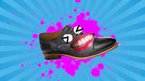
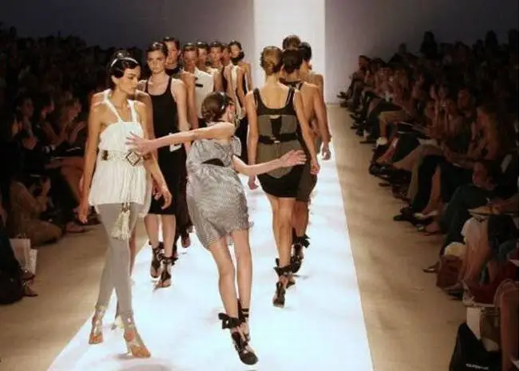

The Wacky Invention
Once upon a time, in the quirky town of Whimsyville, lived Professor Bumblefoot, a brilliant yet absent-minded inventor. Determined to create a revolutionary device, he toiled away in his cluttered laboratory. One fateful afternoon, after countless failed attempts, he finally stumbled upon his wackiest invention yet – a pair of talking shoes!
The Sassy Shoes

The talking shoes, named Sir Stumbles and Lady Laces, possessed an insatiable thirst for adventure. With each step, they spouted sarcastic comments and outrageous jokes. Professor Bumblefoot realized he had created two sassy sidekicks who refused to go unnoticed!
A High-Stakes Fashion Show
Word of the talking shoes quickly spread throughout Whimsyville, capturing the attention of the town's eccentric fashion guru, Madame Frizzletop. She insisted that Sir Stumbles and Lady Laces make their debut at her highly anticipated fashion show, "The Fantabulous Footwear Fiesta."
A Topsy-Turvy Rehearsal

During the fashion show rehearsals, chaos ensued as Sir Stumbles and Lady Laces added their own commentary to Madame Frizzletop's meticulous choreography. The shoes' snarky remarks sent the models into fits of laughter, causing a whirlwind of high heels, tripping, and outrageous dance moves.
A Fashion Disaster Unleashed

The night of the Fantabulous Footwear Fiesta arrived, and the entire town gathered in anticipation. As the models strutted down the runway, the shoes couldn't resist injecting their humorous jibes into the show. The audience erupted into laughter, unable to contain their amusement at the unconventional performance.
An Unexpected Twist
In the midst of the uproar, Professor Bumblefoot accidentally spilled a vial of his experimental invisibility potion onto the runway. Suddenly, models began disappearing, leaving only floating outfits and baffled onlookers. The invisible models continued their walk, their feet adorned by the wisecracking Sir Stumbles and Lady Laces, creating an even more absurd spectacle.
A Heroic Rescue
Panicked, Professor Bumblefoot sprang into action. He managed to whip up an antidote just in time, making the invisible models reappear one by one. The audience erupted into applause, showering Professor Bumblefoot with praise for his accidental ingenuity.
A Happy Ending
After the chaos settled, Whimsyville was abuzz with laughter and talk of the unforgettable fashion show. Sir Stumbles and Lady Laces were hailed as the stars of the event, earning a place in the hearts of everyone. Professor Bumblefoot basked in the glory of his unintentional success, vowing to create more peculiar inventions that would continue to bring joy and laughter to the town.
The Legacy of Laughter
From that day forward, Whimsyville became known as the town where imagination and laughter knew no bounds. Professor Bumblefoot continued inventing his whimsical creations, and the talking shoes, Sir Stumbles and Lady Laces, remained by his side, making every step a comical adventure.
The End... Or Is It?
And so, the tale of Professor Bumblefoot and his talking shoes comes to a close... or does it? Who knows what other zany escapades await them in the future? One thing is certain – the laughter they brought to Whimsyville will echo through the ages, reminding us all to embrace the joy and absurdity of life.